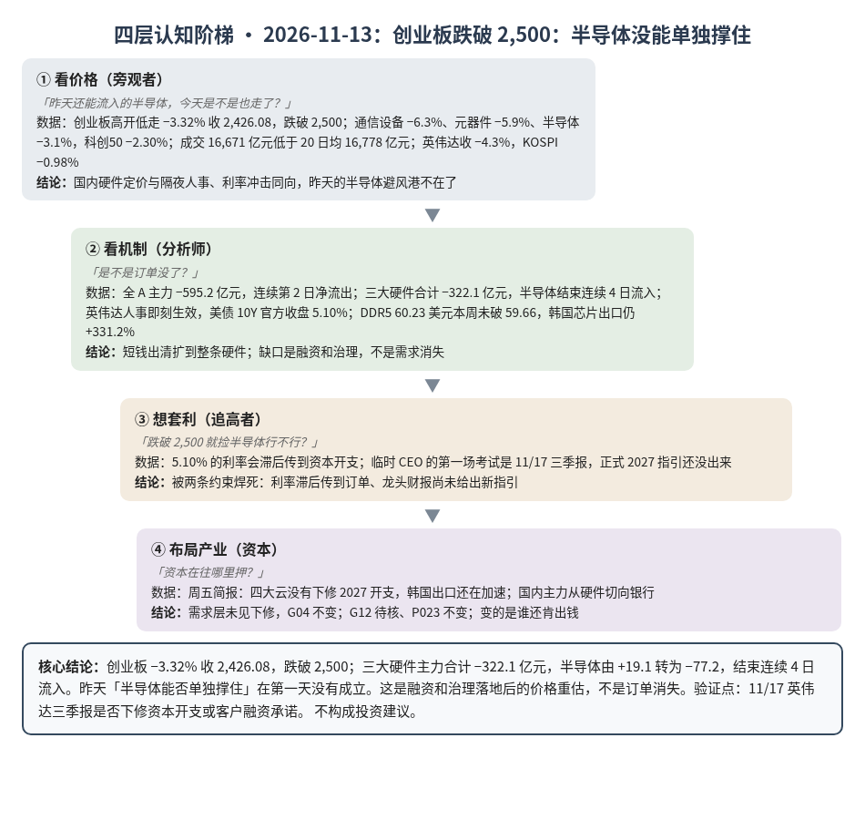
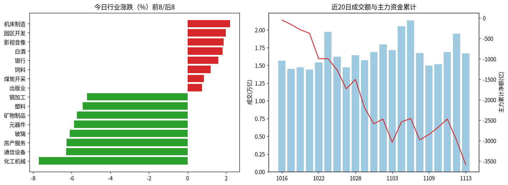
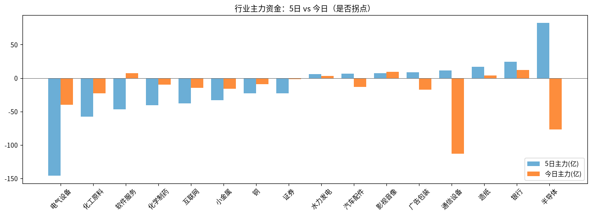

A股投研日报 · 2026-11-13（四层认知版）
- 主线
- 英伟达人事落地，A股硬件从订单定价回到融资定价
- 最重要变化点
- 创业板 −3.32% 收 2,426.08，跌破 2,500；三大硬件主力合计 −322.1 亿元（通信设备 −113.2、元器件 −131.7，半导体由昨日 +19.1 转为 −77.2，结束连续 4 日流入）
- 机制含义
- 短钱出清从光模块扩到整条硬件；缺口仍是融资和治理，不是需求消失
本报告为基于公开数据的研究分析，不构成投资建议。
今日市场概况
数据管道速览（Tushare 收盘数据，规则生成，正文判断见下文）
- 指数：上证指数 -0.59% 收 3,634.35，创业板指 -3.32% 收 2,426.08；深证成指 -2.05%、科创50 -2.30%、上证50 +0.11%、沪深300 -0.68%、中证500 -2.10%、中证1000 -2.76%（Tushare）。
- 量能与宽度：成交 16,671 亿元（20 日均 16,778 亿元）；上涨 765 家 / 下跌 4,748 家，上涨占比 13.7%，个股中位数 -2.0%。
- 主力资金：全 A 主力 -595.2 亿元，连续第 2 日净流出。
- 行业：主力流入居前 银行（+11.9 亿）、影视音像（+9.6 亿）、白酒（+8.7 亿）；流出居前 元器件（-131.7 亿）、通信设备（-113.2 亿）、半导体（-77.2 亿）。
- 龙虎榜 / 北向：机构专用席位合计 -8.57 亿元；沪深股通成交前五 中际旭创、寒武纪、新易盛、东山精密、贵州茅台（成交额≠净买入）。
变化点
方法：四层认知阶梯 + 历史周期律。数据 Tushare（见附录）。不构成投资建议。
一、世界观定位
阶段不变，回退条件不变。变化在楚汉层：美债 10 年期 11/12 官方收盘 5.10%，钱比昨天更贵；英伟达人事从“尚未决议”变成既成事实。世界指标今日天气：整体多云：美股又贵又热，小心；钱开始变紧、AI 链有裂缝、中国经济还没回暖，留意。五盏灯本周没有变化。
二、变化一（主变化）：创业板跌破 2,500，半导体没能单独撑住
- 看价格：「昨天还能流入的半导体，今天是不是也走了？」是。创业板高开低走 −3.32% 收 2,426.08，跌破 2,500；通信设备 −6.3%、元器件 −5.9%、半导体 −3.1%，科创50 由昨日 +0.73% 转为 −2.30%。成交 16,671 亿元，略低于 20 日均 16,778 亿元，比昨天的 19,459 亿元缩量。上涨家数只占 13.7%。隔夜纳指 −0.39% 收 25,366.09，英伟达收 −4.3%（盘中最多跌约 12%）；韩国综指高开后回落 −0.98% 收 5,290.53（源、源、源、源）。
- 看机制：「是不是订单没了？」不是。全 A 主力 −595.2 亿元，连续第 2 日净流出；三大硬件合计由昨天 −148.2 亿元扩大到 −322.1 亿元，半导体结束连续 4 日流入。真正落地的是两件融资侧事实：英伟达董事会宣布黄仁勋辞去总裁、CEO 及董事，CFO 克雷斯任临时 CEO，即刻生效（源）；美国财政部 10 年期国债 11/12 官方收盘 5.10%，昨天的观察点被命中（源）。需求侧没有新的砍单：DDR5 16Gb 现货 60.23 美元，本周未破 59.66；韩国 11 月 1–10 日芯片出口仍同比 +331.2%。银行主力 +11.9 亿元，是资金躲进防守，不是新的产业订单。风险敞口接口：复核后有效断供 Δ$≈0。
- 想套利：「跌破 2,500 就捡半导体」被两件事卡住：5.10% 的利率会滞后传到资本开支；临时 CEO 的第一场考试是 11/17 三季报，正式 2027 指引还没出来（源）。昨天说的「半导体能否单独撑住」在第一天没有成立。
- 布局产业：资本还没在需求层认输——本周五简报已记录：四大云没有下修 2027 开支，韩国出口还在加速。总账 G04 不变；G12 待核（融资约束上升，不是需求证伪）；P023 不变。推断约束仍在机房、电和谁来给美国龙头当家，不在今天的股价。
判断：主要矛盾从「半导体这一路能否单独撑住」转为「人事和 5% 利率落地之后，订单会不会被融资约束改写」。今天证明国内资金给硬件的自主定价通道已经关掉，但还不能把价格当成需求消失。
四、上一交易日验证点回顾（11/12 → 11/13）
| 验证点 | 结果 |
|---|---|
| 创业板收盘是否跌破 2,500 | 命中：2,426.08 |
| 通信设备、元器件主力连续第 2 日净流出 | 命中：−113.2 亿、−131.7 亿 |
| 美债 10Y 11/12 官方收盘 ≥5.00% | 命中：财政部 5.10% |
| 本周 DDR5 16Gb 跌破 59.66 美元 | 未触发：60.23 美元（11/13） |
五、供应链风险敞口（人工复核版）
脚本版见 risk_section_20261113.md。口径为 GB300/NVL72 当量柜年化系统价值；Δ$ 为事件类型假设模板，仅用于排序，非预测。脚本 3 条，误匹配 3 条。复核后有效断供 Δ$≈0，基线维持年化 EL 57.7 亿美元（10/21）。采集降级：GDELT 限流或 0 篇；巨潮公告匹配未恢复。
六、机会表（产业/环节层面，不构成投资建议）
| 环节 | 逻辑 | 证伪条件 |
|---|---|---|
| 光模块上游物料（DSP 等） | 整机交付仍卡在物料，议价权在上游 | 主要厂商称 DSP 不再紧张 |
| 追涨光模块/半导体整机 | 陷阱：半导体接力流入第一天就断 | 三大硬件主力重新连续流入且成交萎缩 |
| HBM / 存储需求读数 | 出口仍加速、现货未破阈值；待验证融资冲击是否传到订单 | 韩国 11 月 1–20 日芯片出口明显失速，或 DDR5 单周跌超 3% |
中长期展望（3–12 个月与 2027）
3–12 个月：「钱开始变紧」「AI 链有裂缝」两问仍黄。今天 10Y 官方收盘 5.10%、英伟达人事落地，G12 的融资约束上升，但需求没有被砍，G04 仍被韩国出口和云厂未下修支持。
2027：P023（四大云 2027 资本开支 ≥8,500 亿美元，概率 0.55）仍是总闸门；11/17 英伟达财报是最近的压力测试，不能用设备商展望或临时 CEO 表态代替四家自己的指引。
什么会改变展望：①11/17 英伟达下修开支或客户融资承诺；②美债 10Y 站稳 5% 以上且任一大云下修 2027 资本开支；③DDR5 现货单周跌超 3%。
七、明日/本周验证点（可证伪）
- 11/17 英伟达三季报是否下修资本开支或客户融资承诺（下修则 G12、P023 需 John 复核）。
- 11/16 三大硬件主力是否继续净流出（若半导体转回流入，短钱出清或告一段落）。
- 11/16–11/17 美债 10Y 是否继续收在 5.00% 以上。
- 下周 DDR5 16Gb 现货跌破 58.42 美元（较 11/13 的 60.23 跌超 3%）。

一句话总结：创业板跌破 2,500：半导体没能单独撑住。
本报告为基于公开数据的研究分析，不构成任何投资建议。
附录：市场数据（证据底稿）


| 收盘 | 今日% | 5日% | 20日% | MA20 | 成交(亿) | |
|---|---|---|---|---|---|---|
| 上证指数 | 3,634.35 | -0.59 | -0.41 | -2.20 | 3,668.61 | 7,706.14 |
| 深证成指 | 10,968.79 | -2.05 | -1.85 | -7.06 | 11,319.66 | 4,539.25 |
| 创业板指 | 2,426.08 | -3.32 | -1.59 | -12.49 | 2,554.06 | 1,927.07 |
| 科创50 | 1,279.66 | -2.30 | 2.11 | -5.81 | 1,273.57 | 1,000.08 |
| 上证50 | 2,775.02 | 0.11 | -0.44 | 0.24 | 2,767.80 | 1,300.48 |
| 沪深300 | 4,016.29 | -0.68 | -0.94 | -3.70 | 4,069.52 | 4,602.46 |
| 中证500 | 6,465.48 | -2.10 | -2.00 | -4.54 | 6,612.99 | 2,801.48 |
| 中证1000 | 6,357.26 | -2.76 | -2.28 | -4.86 | 6,529.80 | 3,242.00 |
行业资金热力（按5日主力净额排序，前8/后8）
| industry | 今日% | 5日% | 20日% | 今日主力(亿) | 5日主力(亿) | 资金连续天数 |
|---|---|---|---|---|---|---|
| 半导体 | -3.1 | 5.6 | 1.2 | -77.2 | 82.5 | -1.0 |
| 银行 | 1.6 | 2.6 | 4.8 | 11.9 | 24.0 | 2.0 |
| 造纸 | -3.0 | -0.4 | 3.2 | 3.8 | 17.1 | 10.0 |
| 通信设备 | -6.3 | 6.5 | -17.4 | -113.2 | 11.7 | -2.0 |
| 广告包装 | -3.9 | 5.4 | 9.1 | -17.1 | 8.4 | -1.0 |
| 影视音像 | 1.9 | 7.6 | 22.2 | 9.6 | 7.4 | 1.0 |
| 汽车配件 | -1.6 | 5.8 | 19.9 | -13.1 | 6.8 | -2.0 |
| 水力发电 | 0.4 | -0.8 | -4.0 | 3.4 | 5.6 | 2.0 |
| 电气设备 | -3.3 | -4.2 | -1.1 | -39.9 | -145.8 | -3.0 |
| 化工原料 | -3.1 | -1.7 | -3.5 | -23.1 | -57.7 | -6.0 |
| 软件服务 | 0.5 | 1.5 | 9.3 | 7.2 | -46.9 | 1.0 |
| 化学制药 | -3.1 | -1.8 | 1.1 | -9.5 | -40.7 | -6.0 |
| 互联网 | -2.0 | 0.6 | 5.1 | -14.4 | -37.8 | -3.0 |
| 小金属 | -3.7 | -2.0 | -4.4 | -16.1 | -33.0 | -2.0 |
| 铜 | -2.9 | -4.6 | -13.0 | -8.9 | -22.7 | -2.0 |
| 证券 | -0.6 | -2.7 | -7.3 | -1.7 | -22.6 | -9.0 |
市场情绪时间序列（近10日）
| trade_date | 成交(亿) | 上涨占比% | 主力净额(亿) | 个股中位涨跌% |
|---|---|---|---|---|
| 20261102 | 17951.9 | 84.0 | 114.9 | 2.0 |
| 20261103 | 17150.9 | 37.8 | -568.2 | -0.7 |
| 20261104 | 20518.9 | 83.8 | 497.2 | 1.9 |
| 20261105 | 21351.0 | 87.4 | 86.9 | 2.0 |
| 20261106 | 16716.0 | 13.6 | -524.0 | -1.9 |
| 20261109 | 14945.5 | 40.2 | 132.1 | -0.3 |
| 20261110 | 15167.5 | 76.7 | 175.5 | 1.3 |
| 20261111 | 16886.9 | 63.5 | 201.5 | 0.6 |
| 20261112 | 19458.7 | 15.7 | -516.5 | -1.6 |
| 20261113 | 16670.7 | 13.7 | -595.2 | -2.0 |
今日上涨765家/下跌4748家，涨幅≥9.8% 44家、跌幅≤-9.8% 84家¹。
龙虎榜侧写：机构专用席位合计 -8.57 亿；净买入居前 宇特光电(+0.43亿)、冰山冷热(+0.35亿)、亚玛顿(+0.28亿)，净卖出居前 蓝盾光电(-1.38亿)、和林微纳(-1.02亿)、沪电股份(-0.89亿)。 沪深股通活跃股：成交前五为中际旭创、寒武纪、新易盛、东山精密、贵州茅台（成交额≠净买入）。
注：¹涨跌停为按±9.8%阈值近似（limit_list_d无权限）。²行业为Tushare stock_basic分类自行聚合（sw_daily/ths_daily/行业资金流接口无权限），成交加权、剔除N/C新股，成分≥8只。³主力=大单+特大单净额（moneyflow）。⁴2024年8月起北向每日净买入停止披露，moneyflow_hsgt/hsgt_top10数值为成交口径，不可解读为净流入。⁵新闻/公告接口无权限，改用新浪财经7x24公开快讯自动抓取+人工补充。
接口状态：trade_cal:OK；stock_basic:OK；index_daily:OK；moneyflow_hsgt:OK；hsgt_top10:OK；top_list:OK；top_inst:OK；index_dailybasic:OK；新浪7x24(公开):OK 3196条（11-12 14:31 起）